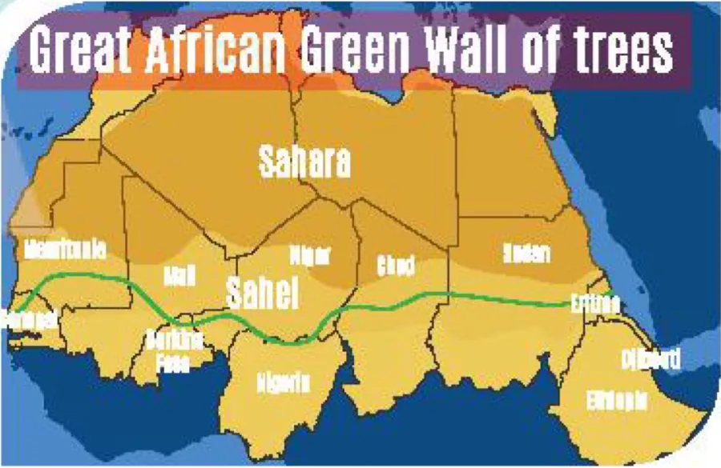
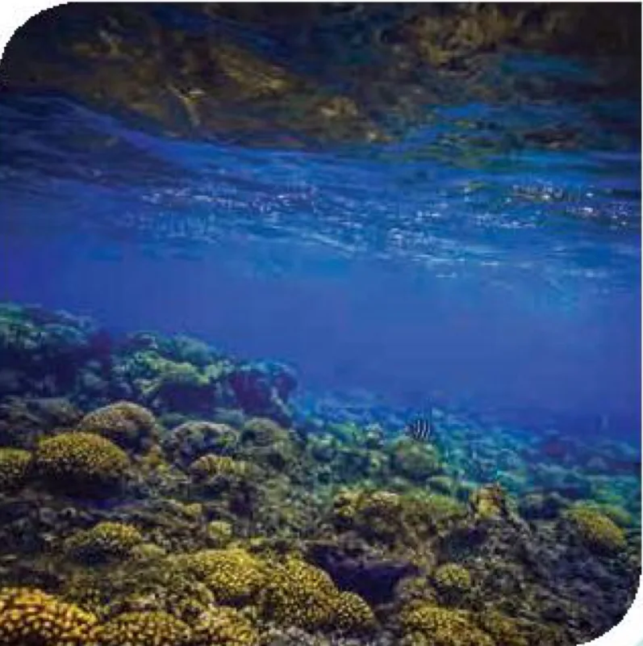

Communication and Culture
Lesson 7 — Likes and dislikes · Protecting ecosystems around the world
10Four stops in 45 minutes
- 🎬
Warm-up
Likes and dislikes
5 min - 💬
Everyday English
Expressing likes and dislikes
17 min - 🌍
CLIL
Ideas from around the world
20 min - ✅
Wrap-up
Exit ticket
3 min
Warm-up
Likes and dislikes
5 minutesWhich expressions are used to talk about likes and dislikes?
No internet? Pairs brainstorm as many expressions for likes and dislikes as they can in 2 minutes.
Expressions in the video
👍 Likes
I’d love to · I love them.
Sounds good · Sounds great
Perfect · Great · Wonderful
… sounds better to me
👎 Dislikes
Not my style · I don’t like
No thanks · No way
It’s just awful · It’s terrible
I’m not a fan
Everyday English
Expressing likes and dislikes
17 minutesAlice and Mai
- A. I can’t stand
- B. I really love
- C. I’m not a fan
Alice: There’re so many activities for visitors in this park. Do you fancy going on an elephant ride, Mai?
Mai: No, thanks. (1) ________ C. I’m not a fan of elephant rides.
Alice and Mai (2–3)
- A. I can’t stand
- B. I really love
- C. I’m not a fan
Alice: Don’t you like elephants? They are very gentle creatures.
Mai: That’s why we shouldn’t ride on them. (2) ________ A. I can’t stand animal cruelty.
Alice: Yes, you’re right. Perhaps we should learn more about the birds in the park.
Mai: Good idea! (3) ________ B. I really love bird-watching.
Likes and dislikes
| Expressing likes | Expressing dislikes |
|---|---|
| • I love/adore … • I’m really into … • I’m a (big) fan of … • I’m keen on … • I’m into … |
• I hate/don’t like … • I can’t bear/stand … • I’m not really into … • … is not my favourite. |
Make similar conversations
1. Student A is talking about the activities he/she does on field trips to national parks. Student B expresses likes/dislikes about these activities.
2. Student A and Student B are planning an eco-friendly class party. They talk about the things and activities they like or dislike at a party.
On a field trip
A: On our field trip to the national park next week, we should collect some insects for our biology lessons. We should bring some jars to put them in.
B: I’m a big fan of insects. Putting them in jars will kill them. And I don’t think we should do that. Insects play an important role in the ecosystem. Why don’t we just observe them and take photos of them?
A: Great idea. I love it!
An eco-friendly class party
A: Shall we use paper plates and cups for our class party this Saturday?
B: Yes, I like your idea. They’re better for the environment than plastic ones. I’m keen on using eco-friendly products.
A: Then let’s ask our classmates to bring their chopsticks or forks. · B: I love your suggestion.
CLIL
Protecting ecosystems — ideas from around the world
20 minutesWords in the text
- marine (adj) /məˈriːn/ (thuộc) biển
- barrier reef (np) /ˈbæriə riːf/ rạn san hô chắn (ngoài khơi)
Protecting ecosystems — Ideas from around the world

The healthier our ecosystems are, the healthier our planet and its people become. Ecosystem restoration can help end poverty, fight climate change, and prevent loss of flora and fauna on every continent and in every ocean. Below are two examples of successful ecological projects.
The Great Green Wall
The goal of this project is to create the largest living structure on the planet. The plan is to restore 100 million hectares of damaged land, limit the amount of carbon dioxide and create 10 million green jobs in Africa. This will provide rich land, food security, and improve the region’s ability to deal with climate change. Since its launch in 2007, Ethiopia and Nigeria have restored millions of hectares of land, and Senegal has planted more than 10 million trees.
Belize Barrier Reef (1)

The Belize Barrier Reef was once described as the most amazing reef in the West Indies. It is home to a large diversity of plants and animals. It is Belize’s top tourist destination, popular for scuba diving and snorkelling, and a UNESCO Natural World Heritage Site.
Belize Barrier Reef (2)
Between 2009 and 2018, it was declared endangered because of pollution and the destruction of its ecosystems. However, because of conservation efforts, a large part of the reef is now protected. There are seven marine reserves. Belize has also stopped oil drilling near the Barrier Reef, banned plastic products, and created ‘no-take zones’, where removing plants and animals is not allowed.
Which project?
| Green Wall | Belize Reef | |
|---|---|---|
| 1. It is a marine ecosystem of rich biodiversity. | ✓ | |
| 2. Its aim is to build the world’s biggest living structure. | ✓ | |
| 3. Millions of trees have been planted in several African countries. | ✓ | |
| 4. The government has taken measures to restore and protect the ecosystem. | ✓ |
Similar projects in Viet Nam? Can these ideas work here?
🌳 the Ecovillage Project: improve soil, plant fruit trees, create fish ponds
🌲 Sustainable Forest Management: stop illegal logging
🗣️ I think … could work in Viet Nam because … · However, …
Before you leave…
1. Say one expression for likes and one for dislikes. I’m keen on … · I can’t stand …
2. What is the goal of the Great Green Wall? to create the largest living structure on the planet
3. Name one thing Belize has done to protect its reef. seven marine reserves · stopped oil drilling · banned plastic products · no-take zones
Homework
1. Practise your Task 2 conversations with a partner.
2. Do the Communication and Culture exercises in the workbook.
3. Prepare for Lesson 8 — Looking back and Project: a poster about a local ecosystem.